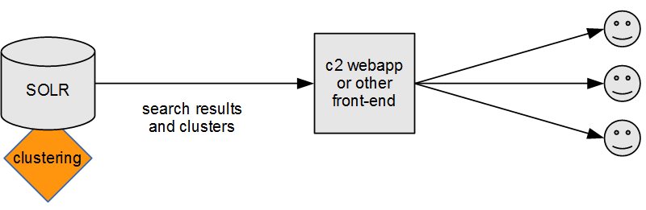

Carrot2 3.8.0, Solr 4.6
Adding clustering of search results to Apache Solr can be done in several ways, depending on where the clustering takes place, which fields are picked for clustering and how they are transformed before they are clustered. This document discusses several of these strategies.
The following github repository contains code samples and configurations used in the remaining part of this document.
git clone https://github.com/carrot2/solr-integration-strategies.git
A local copy of Solr 4.6 will be required.
cd solr-integration-strategies
cd carrot2-3.8.0/
wget -c -t0 -T30 http://www.us.apache.org/dist/lucene/solr/4.6.0/solr-4.6.0.tgz
tar -zxf solr-*.tgz
This example contains a demo Solr configuration (including data schema) and some sample documents from the 20-newsgroups collection. The following command starts Solr and imports these documents. Solr should be started from another shell session since it won't return to shell.
cd solr-4.*
cd example
java -Dsolr.solr.home=../../solr-home -jar start.jar
Once started, the search core should be visible in the administrative panel at http://localhost:8983/solr/#/example.
To import example documents execute the following commands from top-level repository checkout folder:
cd solr-docs
java -jar post.jar 20newsgroups
There are several axes which diversify the configuration of Solr and Carrot2:
All examples in this chapter assume a certain fixed choice in the above set of configuration options. Pick the one closest to your own.
This configuration clusters the selected fields of Solr documents returned for a given query on Solr side, as shown in the figure below.

We will consider a few variants of this configuration in which either full content of fields or just their fragments are used for clustering.
Modify solrconfig.xml. Include Carrot2 JARs distributed with Solr and any
other JARs needed for clustering algorithms (if using Lingo3G, for example). Note that
the paths provided to lib are resolved relative to the core's directory (unless they
are absolute). This can be tricky. For our layout the configuration is:
<lib dir="../../solr-4.6.0/contrib/clustering/lib/" regex=".*\.jar"></lib>
<lib dir="../../solr-4.6.0/dist/" regex=".*solr-clustering-.*\.jar"></lib>
Configure a searchComponent which does the actual clustering. Solr's
wiki has detailed
instructions covering all options. For this example we will configure a single
search component with one algorithm (the open source Lingo).
<searchComponent name="clustering" enable="true" class="solr.clustering.ClusteringComponent">
<lst name="engine">
<str name="name">default</str>
<str name="carrot.algorithm">org.carrot2.clustering.lingo.LingoClusteringAlgorithm</str>
<str name="LingoClusteringAlgorithm.desiredClusterCountBase">20</str>
<str name="carrot.lexicalResourcesDir">clustering/carrot2</str>
<str name="MultilingualClustering.defaultLanguage">ENGLISH</str>
</lst>
</searchComponent>
Once we have a clustering search component we can create a handler that will cluster search results. In this configuration all fields of matching documents are returned, followed by information about clusters.
<requestHandler name="/config1_1" class="solr.SearchHandler">
<lst name="defaults">
<str name="defType">edismax</str>
<str name="qf">
title^1.5 content^1.0
</str>
<str name="rows">100</str>
<str name="fl">*,score</str>
<!-- Enable clustering. -->
<bool name="clustering">true</bool> <!-- enable clustering -->
<bool name="clustering.results">true</bool> <!-- cluster search results, not the collection -->
<str name="clustering.engine">default</str> <!-- use the default engine -->
<!-- Solr-to-Carrot2 field mapping. -->
<str name="carrot.url">name</str> <!-- unique ID field, doesn't have to be an URL -->
<str name="carrot.title">title</str> <!-- document title field. -->
<str name="carrot.snippet">content</str> <!-- document "contents" field -->
</lst>
<!-- Attach clustering as the last processing component. -->
<arr name="last-components">
<str>clustering</str>
</arr>
</requestHandler>
Note the mapping between Solr document's fields and "logical" document sections requried by Carrot2.
The carrot.url field must be something unique because clusters in the response are referenced by
this identifier. Also note the default number of search results to retrieve is 100. Clustering search
results will be meaningful if more than 100 documents are available to the algorithm. This does add up to each query's cost on
Solr, in addition to the clustering itself.
A query sent to this handler will fetch a large file, we will try to do something with this in the next section:
wget -q -O - "http://localhost:8983/solr/example/config1_1?q=memory&wt=xml&indent=true" | wc -c
858190
The problem is that the response contains content field which is large. We can restrict
the result to only contain name and title by modifying the fl
parameter. Note that clustering will still fetch the entire content field
internally so this does not affect clusters. Actually, if only the clusters are needed
one could restrict the fields to just the ID field (name in this example).
<!--
Restrict the returned fields to just the name and title.
contents can be too large to display anyway.
-->
<str name="fl">name,title,score</str>
This results in an much smaller response:
wget -q -O - "http://localhost:8983/solr/example/config1_2?q=memory&wt=xml&indent=true" | wc -c
22895
If the response documents should be displayed (and contain clusters as well) then the middle ground between skipping fields and returning full fields is to use the highlighter to display a contextual fragment of the field around the search hit. This limits the size of the response and allows some insight into the document. Clusters are unaffected in this configuration (full content field is still clustered).
<requestHandler name="/config1_3" class="solr.SearchHandler">
<lst name="defaults">
<str name="defType">edismax</str>
<str name="qf">
title^1.5 content^1.0
</str>
<str name="rows">100</str>
<str name="fl">name,title,score</str>
<!-- Enable highlighter for the content field -->
<bool name="hl">true</bool>
<str name="hl.fl">content</str>
<!-- Disable highlight wrapping. -->
<str name="hl.simple.pre"><!-- --></str>
<str name="hl.simple.post"><!-- --></str>
<str name="f.content.hl.snippets">3</str> <!-- max 3 snippets of 200 chars. -->
<str name="f.content.hl.fragsize">200</str>
<bool name="clustering">true</bool>
<bool name="clustering.results">true</bool>
<str name="clustering.engine">default</str>
<str name="carrot.url">name</str>
<str name="carrot.title">title</str>
<str name="carrot.snippet">content</str>
</lst>
<arr name="last-components">
<str>clustering</str>
</arr>
</requestHandler>
The output of this handler contains the snippets and clusters created on top of full field contents.
wget -q -O - "http://localhost:8983/solr/example/config1_3?q=memory&wt=xml&indent=true" | wc -c
65700
This configuration is similar to clustering full fields inside Solr but takes only a certain number of text fragments around search matches. Doing so, perhaps contrary to the intuition, has several benefits:
The initial configuration setup (JARs, search components) is identical to the one shown in previous configurations. We will focus on search handlers only.
To configure clustering to use query-in-context snippets instead of full field content,
pass carrot.produceSummary attribute in Solr's handler configuration, as shown below:
<requestHandler name="/config2_1" class="solr.SearchHandler">
<lst name="defaults">
<str name="defType">edismax</str>
<str name="qf">
title^1.5 content^1.0
</str>
<str name="rows">100</str>
<str name="fl">name,title,score</str>
<bool name="clustering">true</bool>
<bool name="clustering.results">true</bool>
<str name="clustering.engine">default</str>
<!-- field mapping -->
<str name="carrot.url">name</str>
<str name="carrot.title">title</str>
<str name="carrot.snippet">content</str>
<!-- enable clustering on highlighted fragments only. -->
<str name="carrot.produceSummary">true</str>
<!-- take a max. of 3 fragments from each document's match. -->
<str name="carrot.summarySnippets">3</str>
</lst>
<arr name="last-components">
<str>clustering</str>
</arr>
</requestHandler>
Compare the difference in processing time (QTime) on the server for the configuration
returning the same fields but clustering full content field:
INFO: [example] webapp=/solr path=/config1_2 params={indent=true&q=memory&wt=xml} hits=130 status=0 QTime=987
INFO: [example] webapp=/solr path=/config1_2 params={indent=true&q=memory&wt=xml} hits=130 status=0 QTime=973
INFO: [example] webapp=/solr path=/config1_2 params={indent=true&q=memory&wt=xml} hits=130 status=0 QTime=959
and just the snippets from content or title:
INFO: [example] webapp=/solr path=/config2_1 params={indent=true&q=memory&wt=xml} hits=130 status=0 QTime=272
INFO: [example] webapp=/solr path=/config2_1 params={indent=true&q=memory&wt=xml} hits=130 status=0 QTime=230
INFO: [example] webapp=/solr path=/config2_1 params={indent=true&q=memory&wt=xml} hits=130 status=0 QTime=199
For larger fields the difference would be even more pronounced.
Note that clustering and highlighter fragments are independent so it's possible to use both at the same time, as shown below.
<requestHandler name="/config2_2" class="solr.SearchHandler">
<lst name="defaults">
<str name="defType">edismax</str>
<str name="qf">
title^1.5 content^1.0
</str>
<str name="rows">100</str>
<str name="fl">name,title,score</str>
<!-- Enable highlighter for the content field -->
<bool name="hl">true</bool>
<str name="hl.fl">content</str>
<!-- Disable highlight wrapping. -->
<str name="hl.simple.pre"><!-- --></str>
<str name="hl.simple.post"><!-- --></str>
<str name="f.content.hl.snippets">3</str> <!-- max 3 snippets of 200 chars. -->
<str name="f.content.hl.fragsize">200</str>
<bool name="clustering">true</bool>
<bool name="clustering.results">true</bool>
<str name="clustering.engine">default</str>
<!-- field mapping -->
<str name="carrot.url">name</str>
<str name="carrot.title">title</str>
<str name="carrot.snippet">content</str>
<!-- enable clustering on highlighted fragments only. -->
<str name="carrot.produceSummary">true</str>
<!-- take a max. of 3 fragments from each document's match. -->
<str name="carrot.summarySnippets">3</str>
</lst>
<arr name="last-components">
<str>clustering</str>
</arr>
</requestHandler>
Typically, the clustering process would take place outside of Solr, on a dedicated Carrot2 webapp server or proxy, as shown below.
When using the clustering Workbench, clustering takes place on the user side:
Even though not designed for such a use case, Carrot2's
web application and the Workbench can serve as front-ends
for Solr-clustered search results. Starting with version 3.7.0,
SolrDocumentSource can be told to fetch clusters produced by Solr and optionally use
the highlighter's output. For versions prior to 3.7.0, a custom XSLT
transformation stylesheet combined with XmlDocumentSource needs to be used
(see here).
Such a configuration will correspond to the following diagram:
And the Workbench will connect to Solr directly as well:
A screenshot with Workbench configuration to access clusters in
our example's /config2_2 looks as shown below. Note the output
in the screenshot is hierarchical -- this is so because Lingo3G
(a commercial algorithm plugging into the Carrot2 framework) was
used for its preparation. Solr configuration was identical except for the clustering implementation
name passed via carrot.algorithm parameter.
The webapp can be configured to proxy Solr clusterer's output in a similar fashion simply
by adjusting the default attributes configuring SolrDocumentSource.
Start by fetching the WAR file of the webapp:
wget http://download.carrot2.org/stable/3.8.0/carrot2-webapp-3.8.0.war
unzip -d carrot2-webapp carrot2-webapp-3.8.0.war
cd carrot2-webapp/WEB-INF/suites
vi suite-webapp.xml
Edit suite-webapp.xml to point at the Solr instance and contain just the pass-through algorithm.
<component-suite>
<sources>
<source component-class="org.carrot2.source.solr.SolrDocumentSource" id="solr" attribute-sets-resource="source-solr-attributes.xml">
<label>Solr</label>
<title>Solr Search Engine</title>
<icon-path>icons/solr.png</icon-path>
<mnemonic>s</mnemonic>
<description>Solr document source queries an instance of Apache Solr search engine.</description>
<example-queries>
<example-query>test</example-query>
<example-query>solr</example-query>
</example-queries>
</source>
</sources>
<!-- Algorithms -->
<include suite="algorithm-passthrough.xml"></include>
</component-suite>
The address and remaining attributes of Solr need to be placed into source-solr-attributes.xml.
<attribute-sets default="overridden-attributes">
<attribute-set id="overridden-attributes">
<value-set>
<label>overridden-attributes</label>
<attribute key="SolrDocumentSource.serviceUrlBase">
<value value="http://localhost:8983/solr/example/config2_2"/>
</attribute>
<attribute key="SolrDocumentSource.solrSummaryFieldName">
<value value="content"/>
</attribute>
<attribute key="SolrDocumentSource.solrTitleFieldName">
<value value="title"/>
</attribute>
<attribute key="SolrDocumentSource.solrUrlFieldName">
<value value="name"/>
</attribute>
<!-- Proxy clusters from Solr. Link on 'name' field. -->
<attribute key="SolrDocumentSource.solrIdFieldName">
<value value="name"/>
</attribute>
<attribute key="SolrDocumentSource.readClusters">
<value value="true"/>
</attribute>
</value-set>
</attribute-set>
</attribute-sets>
Note that the default Carrot2 interface exposes customizable document source attributes, which may be a security problem in real deployments. We strongly encourage you to fork the default web application and tailor it to your needs in such cases.
We have already visited this setup when talking about connecting Workbench to display Solr's clusters:
This is pretty much what SolrDocumentSource does by default. You just need to map
Carrot2 logical document sections (title, snippet, url) to Solr's schema and make sure
the handler returns those fields as described when discussing different handler
configurations above.
Note that full fields clustering outside Solr may incur large network overhead penalty associated with fetching long fields over the network and may result in odd-looking long snippets if stored Solr fields are lengthy. For Workbench this can be tuned inside preferences, as shown below.
Alternatively to returning and clustering full fields, starting from version
3.7.0 SolrDocumentSource can use highlighter
fragments if they are available in Solr's response.